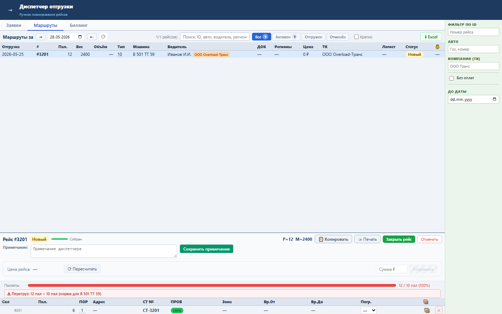

Блок нужен, чтобы диспетчер не закрывал рейс с количеством паллет выше нормы машины.
Фактическая загрузка считается по PALLETS_COUNT в составе рейса. Норма берётся из RRL_TR_VEHICLE.PALLETS выбранной машины.
Когда паллет больше нормы, рядом с индикатором загрузки появляется красное предупреждение с фактом, лимитом и номером машины.

Проверка: functional и UI smoke пройдены; live load gate pending до очистки порта 8088.